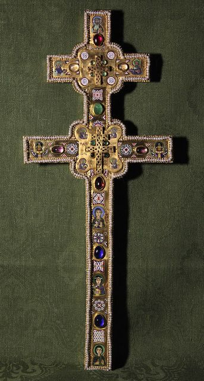

ИСТОРИЯ
История Беларуси
Эпоха каменного века (100 000 – нач. 3 000 до н.э.)
100–35 тыс. лет до н.э. – появление на территории Беларуси первобытного человека. Самые древние поселения людей обнаружены в Гомельской области (у деревень Юровичи и Бердыж), они датируются 26-23 тысячелетиями до н.э. В других областях также были найдены следы доисторических культур.
Эпоха бронзового века (рубеж 3 и 2 тысячелетий – VIII–VI вв. до н.э.)
Археологические находки, относящиеся к бронзовому веку, имеют место на всей территории Беларуси.
Железный век и в раннее средневековье (VIII–VII вв. до н.э. – VIII в. н.э.)
В этот период на территории, которую занимает современная Беларусь в бассейнах крупнейших рек: Днепр, Двина, Припять существовали поселения археологических культур: Милоградской, Поморской, Днепро-Двинской, культуры штрихованной керамики.
Первые политические объединения на территории Беларуси (VI – XIII вв.)
В начале первого тысячелетия нашей эры территорию современной Беларуси начали заселять славянские племена. За несколько столетий они распространились на весь регион, постепенно ассимилируя племена балтов, живших на этих землях.
VI-IX вв. – формирование у восточных славян первых политических объединений – союзов племен. На территории Беларуси: Кривичи, Дреговичи, Радимичи.
IX в. - первое упоминание в летописях города Полоцка и Полоцкого княжества, которое находилось на территории современных Витебской и северной части Минской областей.
Кон. X в. – краткий период объединения большинства восточно-славянских земель при главенстве Киева, а затем до рубежа XIII – XIV вв. – период феодальной раздробленности. Это же время ознаменовалось принятием христианства православного толка как государственной религии и постепенного вытеснения им язычества.
Великое княжество Литовское, Русское и Жемойтское (XIII–XVI вв.)
Великое княжество Литовское, Русское и Жемойтское (ВКЛ) начало создаваться во второй половине XIII в. при князе Миндовге и за полтора века превратилось в очень мощную державу, которая включала земли современных Беларуси, Литвы, Киевской, Черниговской и Волынской областей Украины, а также запада России. Границы государства простирались от Балтийского моря до Черного.
В течение нескольких веков ВКЛ играло важную роль в политике Европы, его влияние ослабело только после разорительных войн XVI века.
В 1569 г. между Великим княжеством Литовским и Королевством Польским была подписана Люблинская уния: два государства объединялись в федерацию – Речь Посполитую.
Речь Посполитая (1569–1795 гг.)
Страна, постоянно раздираемая внутренними противоречиями, постоянно втягивалась в войны, самые разрушительные из которых для белорусских земель: 1654–1667 гг. – война с Московским царством, 1700–1721 гг. – Северная война. В результате Речь Посполитая утратила самостоятельную политику и перестала существовать как государство во время трех разделов (1772, 1793 и 1795 гг.) между Россией, Австрией и Пруссией.
Российская империя (1772–1917)
Почти все белорусские земли оказались в составе Российской империи к 1793 г.
С конца XVIII в. и до середины XIX в. по территории Беларуси прошла волна больших военных конфликтов: восстание под предводительством Тадеуша Костюшко в 1794 г., вторжение армии Наполеона в 1812 г., польское восстание в 1830–1831 гг., восстание под руководством Кастуся Калиновского в 1863–1864 гг.
Затем последовал продолжительный период мира, прерванный Первой Мировой войной (1914–1918 гг.), во время которой на землях Беларуси надолго установилась линия фронта между германскими и российскими войсками, произошли кровавые сражения. 3 марта 1918 г. после подписания Брест-Литовского мирного договора, Советская Россия вышла из Первой мировой войны. Беларусь находилась в германской оккупации до декабря 1918 г.
От Революций до Второй Мировой войны (1917–1941)
март 1917 г. – революция в России, отречение императора Николая II от престола.
ноябрь 1917 г. – Октябрьская революция - власть в России берет большевистская партия.
март 1918 г. – провозглашение Белорусской Народной Республики (БНР). Просуществовала менее года до окончания немецкой оккупации.
1 января 1919 г. – провозглашение Белорусской Советской Социалистической Республики (БССР).
1919–1921 гг. – Война между Советской Россией и Польшей.
1921 г. – подписание Рижского мирного договора, по итогам которого западная территория Беларуси вошла в состав Польши.
1922 г. – БССР входит в состав Союза Советских Социалистических Республик (СССР).
1921–1928 гг. – проводится Новая Экономическая Политика (НЭП).
1921–1939 гг. – польская власть в Западной Беларуси активно проводит политику полонизации.
1932–1933 гг. – организация коллективного сельского хозяйства (колхозов).
Вторая мировая война и Великая Отечественная война (1939–1945 гг.)
17 сентября 1939 г. – после ликвидации Польского государства, Западная Беларусь вошла в состав БССР.
22 июня 1941 г. – начало Великой Отечественной войны.
С сентября 1941 г. – Беларусь полностью под оккупацией германской армии. Начало установления нового порядка, основанного на терроре.
конец 1941 г. – начинает развертываться активное партизанское движение, которое к 1944 г. стало самым массовым во всей Европе.
конец июня – июль 1944 г. – операция «Багратион», в ходе которой войска Красной Армии полностью освободили территорию Беларуси от немецко-фашистских захватчиков.
9 мая 1945 г. – окончание Великой Отечественной войны советского народа против немецко-фашистских захватчиков.
Новейшая история
Послевоенное время ознаменовало собой бурное развитие Беларуси как промышленно-аграрной страны.
1945 г. – принятие Беларуси в состав членов-основателей Организации Объединенных Наций (ООН).
1954 г. – вступление Беларуси в Организацию Объединенных Наций по вопросам образования, науки и культуры (ЮНЕСКО).
апрель 1986 г. – авария на Чернобыльской атомной электростанции, часть территории Беларуси подверглась радиоактивному заражению.
27 июля 1990 г. – Верховный Совет БССР принимает Декларацию о государственном суверенитете БССР, которой был придан статус конституционного закона 25 августа 1991 г., фактически провозглашавшего независимость БССР.
19 сентября 1991 г. – принятие название государства – Республика Беларусь.
15 марта 1994 г. – принятие Верховным Советом Республики Беларусь новой Конституции Республики Беларусь, посредством которой был введен институт президентства.
1994 г. – выборы президента Республики Беларусь. На этот пост избран Александр Григорьевич Лукашенко. Инаугурация главы государства состоялась 20 июля 1994 г.
14 мая 1995 г. – проведение парламентских выборов и референдума, на котором решены вопросы о придании русскому языку статуса государственного наравне с белорусским, установлении новых Государственного флага и Государственного герба Республики Беларусь, экономической интеграции с Российской Федерацией.
2 апреля 1996 г. – президентами Беларуси и России Александром Лукашенко и Борисом Ельциным подписан Договор об образовании Сообщества Беларуси и России, 2 апреля 1997 г. Договор о Союзе между Республикой Беларусь и Российской Федерацией.
8 декабря 1999 г. – подписание Договора о создании Союзного государства Беларуси и России, принятие Программы действий по реализации его положений.
10 октября 2000 г. – Россия, Беларусь, Казахстан, Кыргызстан и Таджикистан подписали договор о создании Евразийского экономического сообщества (ЕврАзЭС).
27 ноября 2009 г. – руководителями России, Беларуси и Казахстана подписаны документы о создании с 1 января 2010 года Таможенного Союза.
22 июля 2012 г. – на космодроме Байконур в Казахстане произведен запуск белорусского спутника по дистанционному зондированию Земли (БКА). Беларусь - космическая держава.
29 мая 2014 г. – президенты Республики Беларусь, Российской Федерации и Казахстана Александр Лукашенко, Владимир Путин и Нурсултан Назарбаев подписали договор о создании Евразийского экономического союза (ЕАЭС), который заменил собой существовавший до этого ЕврАзЭС. Вступил в силу договор 1 января 2015 года.
11 октября 2015 г. – состоялись очередные президентские выборы, на которых действующий глава государства набрал рекордные 82,49% в первом туре и в пятый раз подряд занял высший государственный пост.
ИНТЕРНЕТ-РЕСУРСЫ